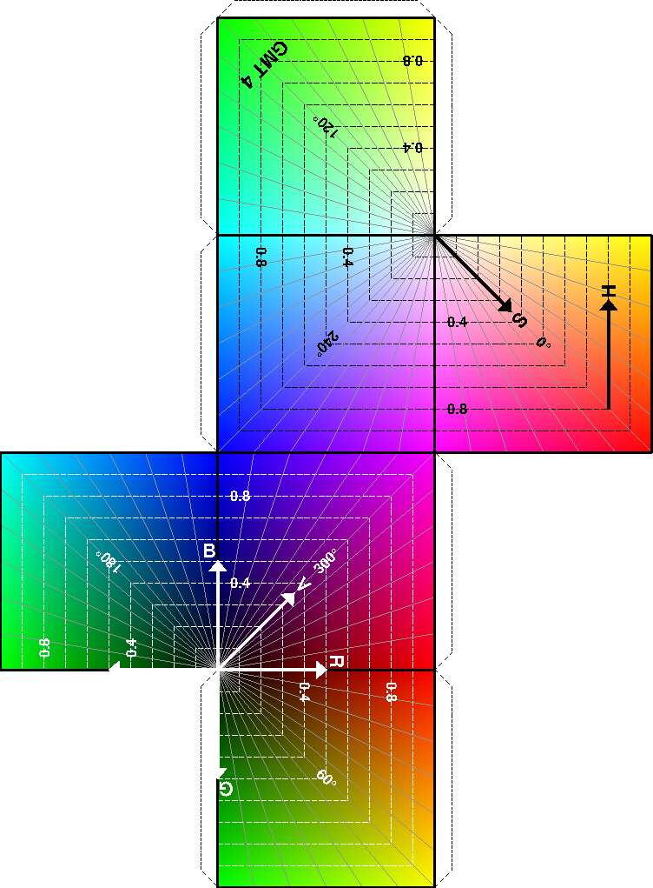

Example 11. You may specify color in GMT using either the RGB system or the HSV
system. This example shows the RGB color cube. If you cut along the dotted lines,
fold, and glue it together it will form the 6 sides of the color cube. This
illustration was made with awk and several calls to grdimage, psxy, and pstext.
 View GMT script.
View GMT script.
 Download zipped PostScript file.
Download zipped PostScript file.
 Back
Back